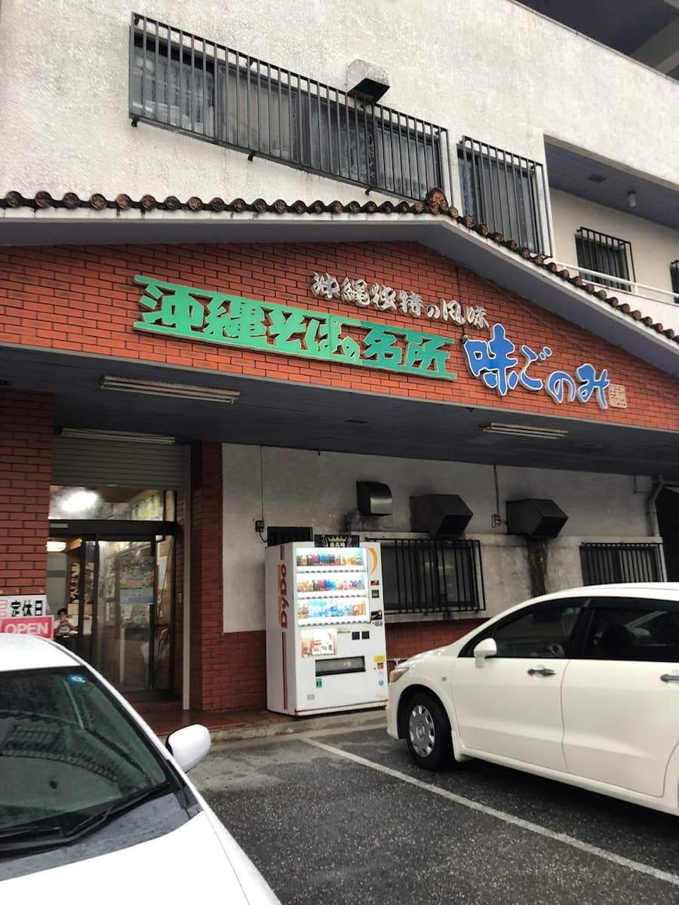
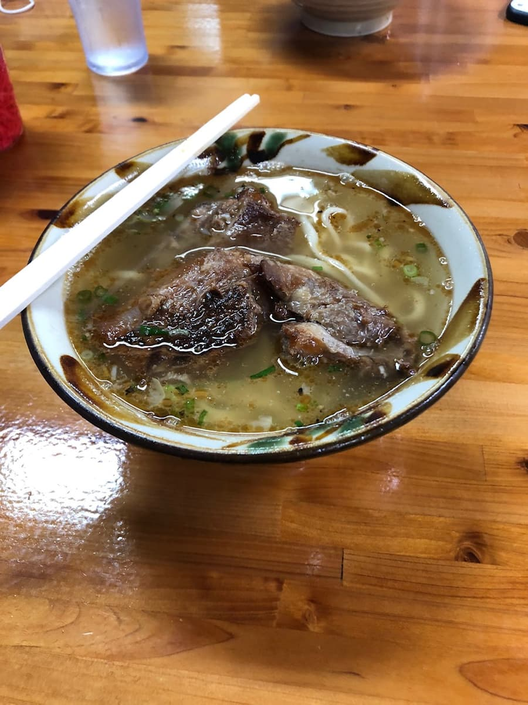

2022.11に食べました。

「軟骨そば」を注文😊

麺は中太のストレートタイプ、軟骨ソーキは柔らかく味もしっかりついて普通に美味い😋 スープは豚骨ベースですね。ボリュームもまあまです😁
評価（9点/15点）：普通に美味しいですが、申し訳ないですが、豚骨ベースのスープは同じ沖縄市の「796（ナンクル）」さんのようなクリーミーな舌触り、旨味はない感じです。私は「796（ナンクル）」さんの方がオススメですね。ただし、沖縄こどもの国（動物園）に近いため、動物園と食事を絡めたい場合はこちらのお店が近くて便利です😁
麺 ：★★★☆☆（3）
スープ：★★★☆☆（3）
具 ：★★★☆☆（3）